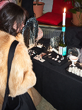
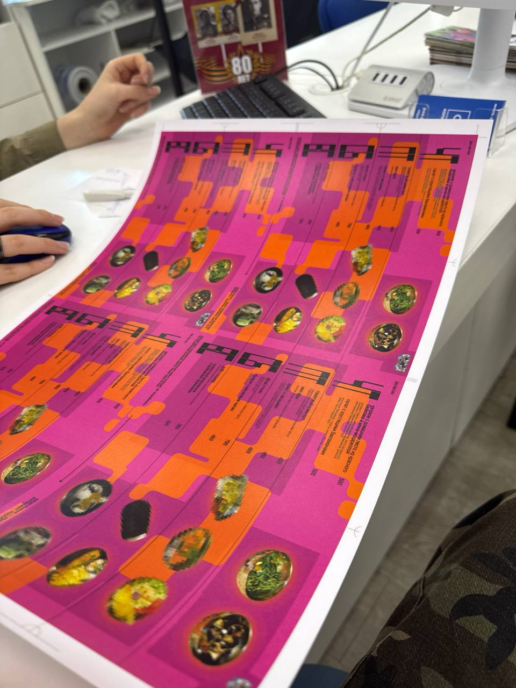
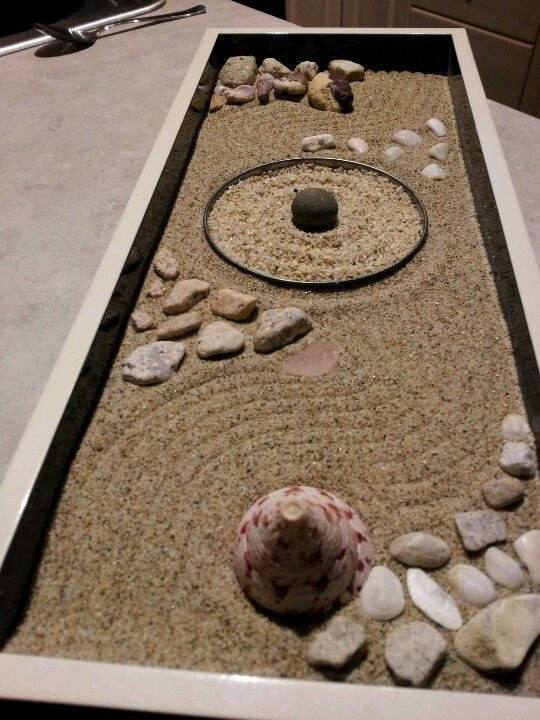
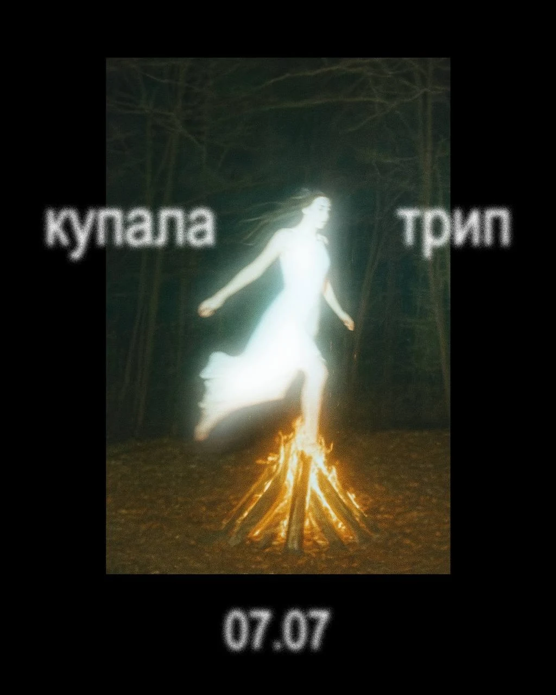
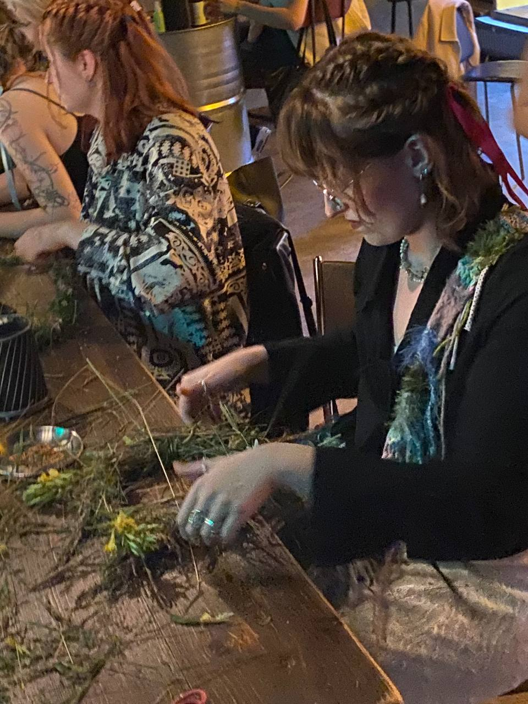
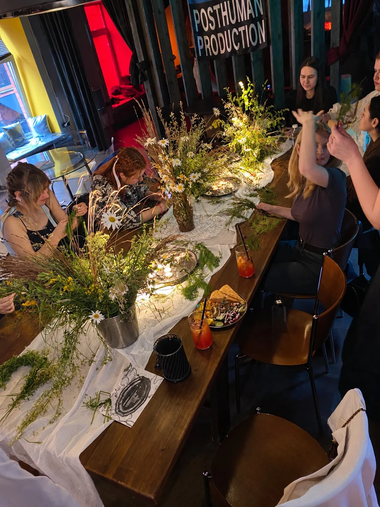
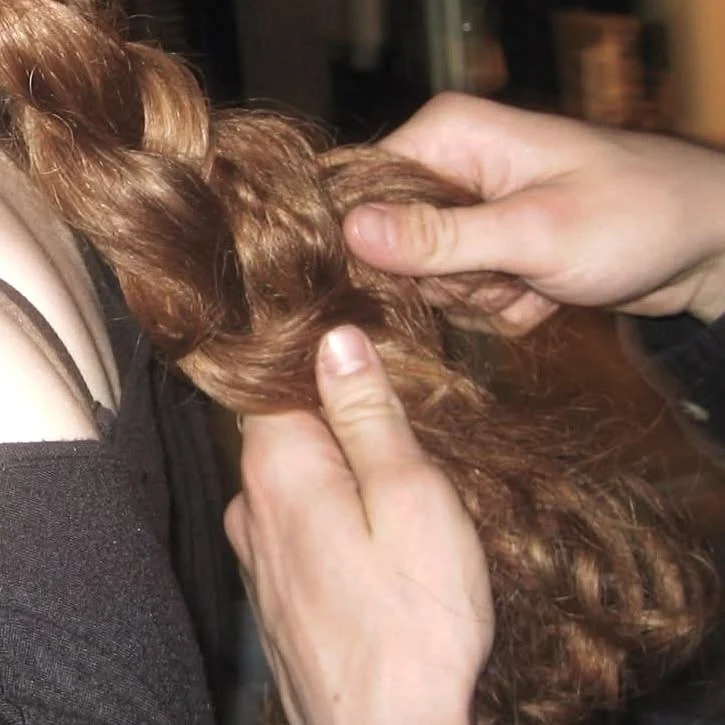
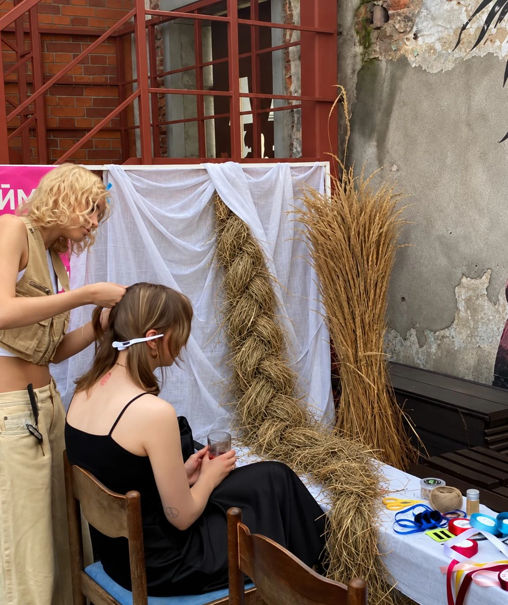
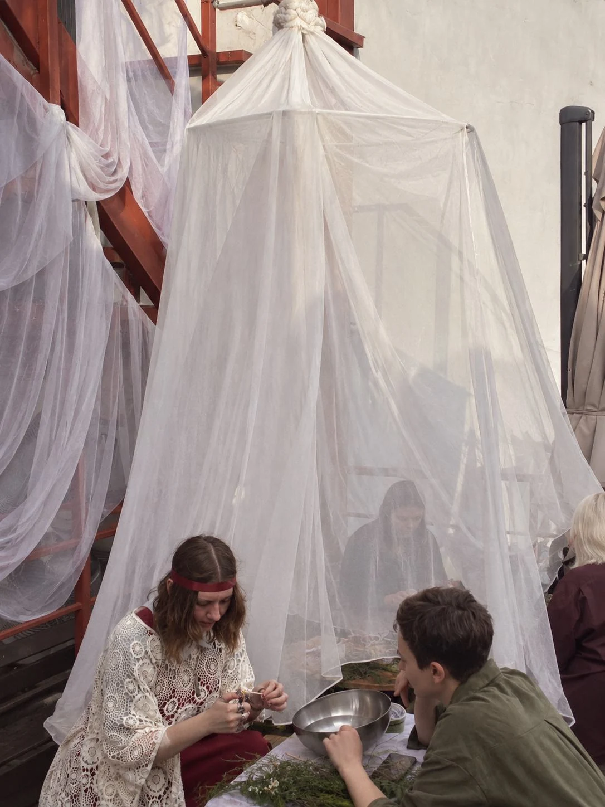
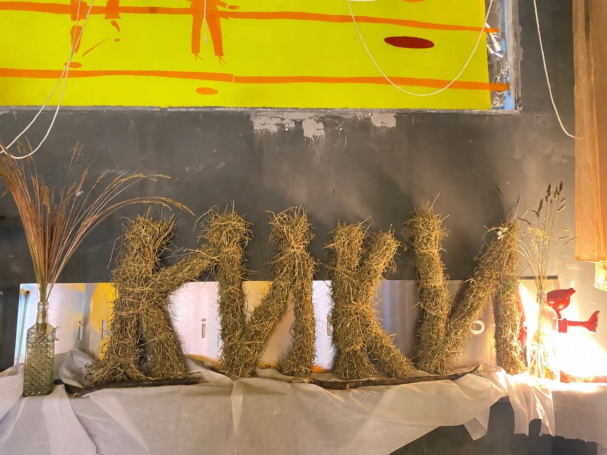

kiki · авангардный культурно-гастрономический проект
Усиливала позиционирование как мультикультурного гастрономического проекта и привлекала гостей в пространство через авторские ивенты и коллаборации
курирование и продвижение коллабораций с Art Blago, Farming Utopia, Easy Ping Pong Club, Rep Chess, SLAY и другими петербургскими проектами.
О проекте
кики – это культовое место петербурга. ресторанный подход к ститфуду, техно, смешение традиций и живое пространство на все случаи жизни - от бранчей с друзьями до ночных танцев
Придумывала и курировала спецпроекты: сбор и защита концепции, партнёры для коллабораций, программа, координация команды, сет-дизайн – полный цикл
Интегрировала гастрономию в концепцию каждого проекта
Занималась PR-сопровождением: медиапланирование, формирование инфоповодов, работа с медиа и инфлюенсерами
(за 10 дней от идеи до реализации)
креативный дирекшнпродюсирование
маркет kiki bazaar
Результат
250+ гостей за 4 часа работы
20+ ugc, упоминания от участников и гостей
Концепция
Предновогодний маркет в формате восточного базара — продолжение мультикультурного позиционирвоания кики и связи проекта с кухней древнего Леванта.
Визуал
опорные ассоциации для оформления — изобилие и гостеприимство
Композиции из гранатов, ковры и ткани
Программа
локальные дизайнеры, ювелиры, художники и бренды, подходящих проекту по эстетике: Волчок, voetmoi.ceramics, Dirty’s и др.

шелкографический стэйшн для создания открыток со специально разработанным для события принтом в форме ковра;
Мои задачи
искала, утверждала и координировала участников
разработала визуальную и смысловую концепцию ярмарки
координировала работу всех зон во время ивента
курировала промо мероприятия
Промо кампания к запуску нового меню
С элементами геймификации
Результат
публикации, налаженный личный контакт и дальнейшее взаимодействие с приглашёнными петербургскими медиа и гастро-инфлюенсерами: Restoclub, Ветром по Питеру, kuda go, Cava disco и др.
гости включались в механику и активно заказывали новые позиции в течение всей кампании;
Механика
Позиции открывались каждый день
Каждый день на протяжении недели открывались две новые позиции, но по специальным условиям можно было попробовать только одну — выбор определял бросок кубика.

Закрытый бранч
Пригласили петербургские медиа на презентацию всего меню.

Референс оформления
Мои задачи
разработала стратегию и концепцию промо
брифовала комнаду зала
организацовала пресс-ужин: поиск гостей, визуал, коммуникация с медиа
Продюсирование фестиваля
креативный дирекшнпродюсирование
фестиваль купала трип
Результат
200+ гостей
У анонса фестиваля был самый большой охват среди анонсов событий kiki.

Концепция
В основе проекта — идея о том, что древняя языческая традиция может продолжать жить, меняя форму. Опираясь на личный опыт празднования Ивана Купалы в старообрядческой деревне и специфику бренда, я разработала его современную городскую интерпретацию, продолжающую объединять людей через ритуалы, мистику и очищение
Программа
Переосмысление славянских обрядов
плетение венков из свежих полевых растений, которые мы собирали накануне


а-капелла фолк перформанс от Елены Живы и этническая музыкальная программа
гадание на расплавленном воске в шатре
плетение кос от мастеров парикмахерского пространства Slay;


Визуал
Ленты, прозрачный шатёр, букеты полевых цветов, композиции из сена


Спэшл:
травяные целебные напитки на основе алтайского иван-чая и можжевельника, продолжавшие тему события и разработанные специально для фестиваля